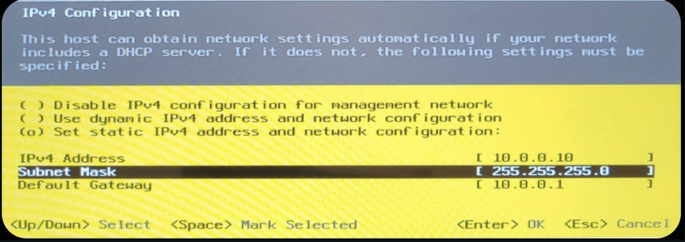

Lab Infrastructure: The Dell AIO Cyber Range
This project documents the design, setup, and configuration of a dedicated, isolated cybersecurity lab built around a repurposed Dell OptiPlex All-in-One (AIO) server and a MacBook Pro management station.
1. Lab Topology and Architecture
The lab follows a client-server model, utilizing a Type-1 hypervisor on the server (Dell AIO) and a Type-2 hypervisor on the management station (MacBook Pro).
2. Tools and Hardware
| Category | Component | Specification | Role |
|---|---|---|---|
| Server | Dell OptiPlex 7440 AIO | i5-6500, 32GB RAM | Dedicated VM Host (Type 1 Hypervisor) |
| Storage | External SSD | 2TB SATA III | Main VM Datastore |
| Network | TP-Link UE306 | USB 3.0 Gigabit | Physical Uplink |
| Mgmt | MacBook Pro | M2, macOS | Management Console (SSH/Web) |
| Hypervisor | VMware ESXi | Version 8.0 | Core Virtualization |
3. Installation and Configuration Process
3.1 The Challenge: Creating the Installer
The installation of the ESXi hypervisor presented a key technical challenge. Standard graphical tools failed to create a bootable drive for this specific hardware configuration (Dell OptiPlex 7440).
The Failure: I initially attempted to use balenaEtcher to flash the ISO. However, it failed to create a partition table that the Dell BIOS could recognize.
- Missing partition table warning.
- Drive unrecognized by BIOS legacy boot mode.
Figure 1: Missing partition table error
3.2 The Solution: Native Terminal Formatting
To resolve this, I bypassed GUI tools and utilized macOS native terminal utilities to manually structure the drive with an MBR (Master Boot Record) partition map and FAT32 file system.
Step 1: Formatting and Partitioning
diskutil eraseDisk MS-DOS "ESXI" MBR disk4
This command reformats the disk with the required MBR scheme.
Step 2: Marking Partition as Active
Using fdisk was critical to flag the partition as bootable for the legacy BIOS.
sudo fdisk -e /dev/disk4 > f 1 # Flag partition 1 as active > write # Write changes to table > quit
Step 3: Mounting and Copying Files
hdiutil attach VMware-VMvisor-Installer-8.0U3e.iso cp -Rv /Volumes/ESXI-INSTALLER/* /Volumes/ESXI/
Manually copying the installer contents to the newly prepared bootable USB.
3.3 Boot Configuration Edit
To ensure the bootloader could locate the kernel, I edited the isolinux.cfg file, modifying the APPEND line to include -p 1. This prevents "Bank not found" errors.
LABEL install KERNEL mboot.c32 APPEND -c boot.cfg -p 1
Figure 3: Appending the partition flag
3.4 Post-Install Configuration (DCUI)
Once installed, I accessed the Direct Console User Interface (DCUI) to configure the management network. I disabled DHCP and assigned a static IP (10.0.0.10) to ensure reliable remote management.
Figure 5 & 6: Static IP Assignment
4. Final Status and Conclusion
The Dell AIO is now fully operational as a "headless" hypervisor. Verification is confirmed via the VMware ESXi Host Client running on the MacBook Pro.
Next Steps: Phase 2
- Security Onion: Deploying the NSM sensor.
- Kali Linux: Configuring the attack box.
- Attack Simulation: Running the first "live fire" exercise.
📂 View Phase 2: VM Build Notes
Documentation on how I deployed SIEM(Splunk Enterprise) on Ubuntu server, Kali, and Windows Sysmon on Windows Targets on top of this infrastructure.